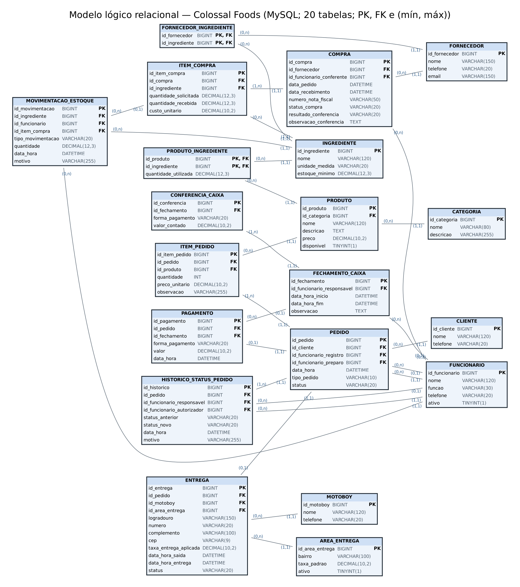

Modelagem de Dados · Entrega 2
Gestão de informações para uma hamburgueria: do levantamento ao banco MySQL com consultas gerenciais e de auditoria
Murilo Silva Magalhães
RGM 47820471
Kauê de Lima Pereira
RGM 48477940
Análise e Desenvolvimento de Sistemas
UNICID · 2026
Contexto · Caso A, organização real
4 + 1
2 na chapa, 2 no atendimento e 1 motoboy fixo
≈ 40
Faixa de 30 a 50 pedidos, de segunda a sexta
≈ 75
Faixa de 60 a 90 por dia; ≈ 300 a 330 por semana
R$ 2
Valor informado pela loja para cada delivery
Problemas de informação
| Cód. | Problema | Onde aparece no modelo | Consulta |
|---|---|---|---|
| P1 | Não se sabe quanto o delivery demora nem onde atrasa | PEDIDO, HISTORICO_STATUS, ENTREGA | G01, G12, G13 |
| P2 | Preço decidido sem histórico nem custo dos ingredientes | ITEM_PEDIDO, PRODUTO, ITEM_COMPRA | G02, G03, G15 |
| P3 | Estoque sem entradas, saídas e alerta de reposição | INGREDIENTE, MOVIMENTACAO | G04 |
| P4 | Cancelamentos sem motivo nem autorização | HISTORICO_STATUS_PEDIDO | G05 |
| P5 | Caixa fechado sem valor esperado por forma de pagamento | PAGAMENTO, FECHAMENTO, CONFERENCIA | G06, G10 |
| P6 | Compras sem fornecedor, nota fiscal e custo rastreáveis | FORNECEDOR, COMPRA, ITEM_COMPRA | G07 |
| P7 | Áreas e taxas de entrega sem cadastro | AREA_ENTREGA, ENTREGA | G08 |
Solução proposta
Pedidos, delivery, estoque, compras e caixa em um só MySQL 8, com as regras de negócio garantidas pelo próprio banco.
16
20
27
11
15
13
Modelo lógico relacional

REALIZA vira PEDIDO.id_cliente. Participação opcional (0,1) aceita NULL, como id_funcionario_preparo.
PAGAMENTO.id_pedido e ENTREGA.id_pedido: no máximo um por pedido, sem colunas nulas em PEDIDO.
CONTÉM vira ITEM_PEDIDO; COMPÕE vira PRODUTO_INGREDIENTE; FORNECE vira FORNECEDOR_INGREDIENTE.
ITEM_PEDIDO guarda o preço praticado; HISTORICO_STATUS_PEDIDO mede os tempos; MOVIMENTACAO_ESTOQUE calcula o saldo.
SQL · Trigger RN05
DELIMITER $$
CREATE TRIGGER trg_item_pedido_bi
BEFORE INSERT ON ITEM_PEDIDO
FOR EACH ROW
BEGIN
DECLARE v_disponivel TINYINT DEFAULT NULL;
SELECT disponivel INTO v_disponivel
FROM PRODUTO
WHERE id_produto = NEW.id_produto;
IF v_disponivel IS NULL OR v_disponivel <> 1 THEN
SIGNAL SQLSTATE '45000' SET MESSAGE_TEXT =
'RN05: produto indisponivel nao pode ...';
END IF;
END$$
Roda antes de gravar o item (NEW); se o produto está indisponível, aborta o INSERT.
Teste T01
INSERT INTO ITEM_PEDIDO
(id_pedido, id_produto, quantidade, preco_unitario)
VALUES (1, 12, 1, 15.00);
Error 1644: RN05: produto indisponivel nao pode entrar em novo pedido
Resultado da G12 · % de deliveries em até 45 min, por dia
26/10
seg
27/10
ter
28/10
qua
29/10
qui
30/10
sex
31/10
sáb
01/11
dom
02/11
seg
03/11
ter
04/11
qua
05/11
qui
06/11
sex
07/11
sáb
08/11
dom
■ Amarelo: atingiu a meta
■ Vermelho: abaixo da meta
Pior caso: 105 min em 07/11
Resultado da G15 · CMV % por produto (meta ≤ 35%)
■ Vermelho: acima de 35%
■ Amarelo: dentro da meta
Linha tracejada: meta de 35%
Auditoria A08 · RN18 · KPI K14
SELECT fc.id_fechamento, pg.forma_pagamento,
pg.valor_esperado, cc.valor_contado,
ROUND(cc.valor_contado - pg.valor_esperado, 2)
AS diferenca
FROM (SELECT id_fechamento, forma_pagamento,
SUM(valor) AS valor_esperado
FROM PAGAMENTO
GROUP BY id_fechamento, forma_pagamento) pg
JOIN FECHAMENTO_CAIXA fc
ON fc.id_fechamento = pg.id_fechamento
LEFT JOIN CONFERENCIA_CAIXA cc
ON cc.id_fechamento = pg.id_fechamento
AND cc.forma_pagamento = pg.forma_pagamento
WHERE cc.id_conferencia IS NULL
OR ABS(cc.valor_contado - pg.valor_esperado) > 0.01;
29/10 · DINHEIRO
− R$ 5,00
Esperado R$ 353,90 · contado R$ 348,90
06/11 · DINHEIRO
+ R$ 2,00
Esperado R$ 513,60 · contado R$ 515,60
As outras 12 auditorias (A01–A07, A09–A13) retornam 0 linhas: regras respeitadas.
Arquitetura analítica
Fatos
PEDIDO / ITEM_PEDIDO, PAGAMENTO, ENTREGA, MOVIMENTACAO_ESTOQUE, ITEM_COMPRA
Dimensões
CLIENTE, PRODUTO, CATEGORIA, INGREDIENTE, FORNECEDOR, FUNCIONARIO, AREA_ENTREGA e tempo (data_hora)
As consultas G01–G15 viram views e alimentam um painel em Power BI, Looker Studio ou Metabase.
Por dia e hora (G13), para escalar equipe e motoboy.
Consumo pela ficha técnica + histórico de movimentação.
Desvios de caixa (A08) e ajustes de estoque frequentes.
Produtos vendidos juntos; tempo de entrega por área e horário.
Benefícios para a decisão
01
G12 e G13 mostram sexta a domingo, 20h–22h, como o gargalo do delivery.
02
G15 aponta Double Burger, Brownie e Bacon Burger acima de 35% de custo.
03
G04 avisa quando refrigerante ou chocolate ficam abaixo do mínimo.
04
G06 e A08 mostram o dia, a forma de pagamento e o valor da quebra.
Colossal Foods · Modelagem de Dados
Perguntas?
Murilo Silva Magalhães
RGM 47820471
Kauê de Lima Pereira
RGM 48477940
github.com/mur1lxz/analise-dados-colossal-foods